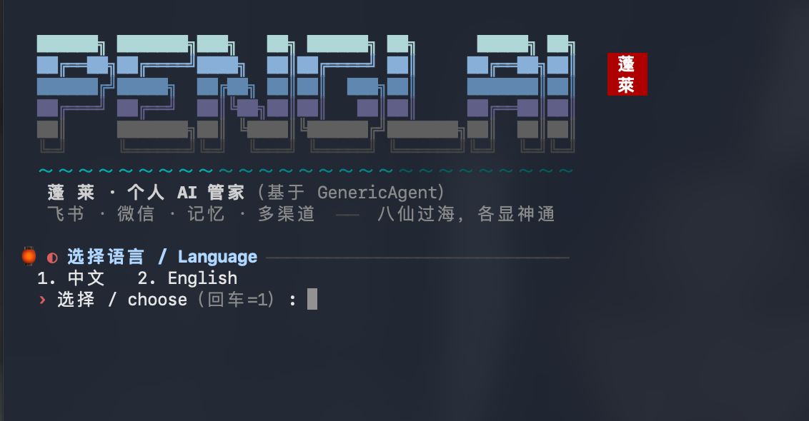

每一条都在真实服务器上每天跑着，不是路线图
本地 CPU 跑 SenseVoice（约 230MB）：语音转写 + 7 种情绪 + 声学事件。飞书/微信开箱即用，钉钉/QQ/企微由发行层封装补齐。
已实测：飞书扫码自动建应用（免公网 IP）、个人微信扫码登录、终端 TUI。已封装待真机验证：钉钉/QQ/企微/Telegram/Discord，各一条命令。同一个管家，多个门。
索引/事实/技能/原始会话四层文件式记忆，纯 markdown 可审计；写入前威胁扫描，禁止覆盖。
危险命令与路径红线拦截 + 全量工具调用审计 + 出站文件白名单。安全靠确定性检查，不靠 LLM 自觉。
内置免费 Bing 兜底，无头云服务器也能查天气/新闻/事实，不依赖浏览器。想要多源交叉验证再 penglai enable intel 叠加独立搜索源。
心跳 + 硬编码门禁：恶劣天气预警、从语音里听出的情绪关心、早晚问候、久未联系才招呼。勿扰时段、绝不插话。
第一次向导没开的，事后一条命令补上：penglai enable voice｜companion｜intel。
GA 内核自带 7 个 IM 前端，蓬莱层统一封装为 penglai enable
penglai 即聊—内核penglai enable dingtalk自带 ASR待实测penglai enable qqwav+情绪待实测penglai enable wecom自带 ASR待实测penglai enable telegram—待实测penglai enable discord—待实测✓ 实测 = 真机走完全程 ｜ 待实测 = 代码就绪未跑真机 ｜ 金色标签 = 语音由发行层封装（上游前端原本丢弃语音）。诚实比好看重要。
没有 Python、没有 git 都不要紧，脚本全自动备好；国内网络自动走镜像

↑ 安装向导实景：中英双语 · 翻页式步骤 · 渠道一页多选
从首次开源到今天，每一版都来自真实使用反馈
penglai update。
可望而不可即
蓬莱是传说中的海上仙山。AI 之于普通人，正如蓬莱之于古人——明明听说了它的神通，却被一层迷雾挡在岸边：API、终端、配置，每一样都是劝退的礁石。
蓬莱想做那艘摆渡的船：会发微信，就该会用 AI 管家。八仙过海，各显神通——多模型、多渠道，每个人都能找到自己上岛的路。
Personal AI Stack 的长期实践笔记：深度思考 · 实用工具 · 开源项目——蓬莱的开发幕后与新版本预告首发于此
微信「搜一搜」KevinAIStack，或扫码关注